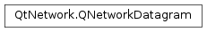

QNetworkDatagram¶
Note
This class was introduced in Qt 5.8.
Synopsis¶
Functions¶
- def
clear() - def
data() - def
destinationAddress() - def
destinationPort() - def
hopLimit() - def
interfaceIndex() - def
isNull() - def
isValid() - def
makeReply(payload) - def
senderAddress() - def
senderPort() - def
setData(data) - def
setDestination(address, port) - def
setHopLimit(count) - def
setInterfaceIndex(index) - def
setSender(address[, port=0]) - def
swap(other)
Detailed Description¶
The
PySide2.QtNetwork.QNetworkDatagramclass provides the data and metadata of a UDP datagram.
PySide2.QtNetwork.QNetworkDatagramcan be used with thePySide2.QtNetwork.QUdpSocketclass to represent the full information contained in a UDP (User Datagram Protocol) datagram.PySide2.QtNetwork.QNetworkDatagramencapsulates the following information of a datagram:
- the payload data;
- the sender address and port number;
- the destination address and port number;
- the remaining hop count limit (on IPv4, this field is usually called “time to live” - TTL);
- the network interface index the datagram was received on or to be sent on.
PySide2.QtNetwork.QUdpSocketwill try to match a common behavior as much as possible on all operating systems, but not all of the metadata above can be obtained in some operating systems. Metadata that cannot be set on the datagram when sending withQUdpSocket.writeDatagram()will be silently discarded.Upon reception, the
PySide2.QtNetwork.QNetworkDatagram.senderAddress()andPySide2.QtNetwork.QNetworkDatagram.senderPort()properties contain the address and port of the peer that sent the datagram, whilePySide2.QtNetwork.QNetworkDatagram.destinationAddress()andPySide2.QtNetwork.QNetworkDatagram.destinationPort()contain the target that was contained in the datagram. That is usually an address local to the current machine, but it can also be an IPv4 broadcast address (such as “255.255.255.255”) or an IPv4 or IPv6 multicast address. Applications may find it useful to determine if the datagram was sent specifically to this machine via unicast addressing or whether it was sent to multiple destinations.When sending, the
PySide2.QtNetwork.QNetworkDatagram.senderAddress()andPySide2.QtNetwork.QNetworkDatagram.senderPort()should contain the local address to be used when sending. The sender address must be an address that is assigned to this machine, which can be obtained usingPySide2.QtNetwork.QNetworkInterface, and the port number must be the port number that the socket is bound to. Either field can be left unset and will be filled in by the operating system with default values. ThePySide2.QtNetwork.QNetworkDatagram.destinationAddress()andPySide2.QtNetwork.QNetworkDatagram.destinationPort()fields may be set to a target address different from the one the UDP socket is currently associated with.Usually, when sending a datagram in reply to a datagram previously received, one will set the
PySide2.QtNetwork.QNetworkDatagram.destinationAddress()to be thePySide2.QtNetwork.QNetworkDatagram.senderAddress()of the incoming datagram and similarly for the port numbers. To facilitate this common process,PySide2.QtNetwork.QNetworkDatagramprovides the functionPySide2.QtNetwork.QNetworkDatagram.makeReply().The hopCount() function contains, for a received datagram, the remaining hop count limit for the packet. When sending, it contains the hop count limit to be set. Most protocols will leave this value set to the default and let the operating system decide on the best value to be used. Multicasting over IPv4 often uses this field to indicate the scope of the multicast group (link-local, local to an organization or global).
The
PySide2.QtNetwork.QNetworkDatagram.interfaceIndex()function contains the index of the operating system’s interface that received the packet. This value is the same one that can be set on aQHostAddress.scopeId()property and matches theQNetworkInterface.index()property. When sending packets to global addresses, it is not necessary to set the interface index as the operating system will choose the correct one using the system routing table. This property is important when sending datagrams to link-local destinations, whether unicast or multicast.
Feature support¶
Some features of
PySide2.QtNetwork.QNetworkDatagramare not supported in all operating systems. Only the address and ports of the remote host (sender in received packets and destination for outgoing packets) are supported in all systems. On most operating systems, the other features are supported only for IPv6. Software should check at runtime whether the rest could be determined for IPv4 addresses.The current feature support is as follows:
Operating system Local address Hop count Interface index FreeBSD Supported Supported Only for IPv6 Linux Supported Supported Supported OS X Supported Supported Only for IPv6 Other Unix supporting RFC 3542 Only for IPv6 Only for IPv6 Only for IPv6 Windows (desktop) Supported Supported Supported Windows RT Not supported Not supported Not supported
-
class
PySide2.QtNetwork.QNetworkDatagram¶ -
class
PySide2.QtNetwork.QNetworkDatagram(data[, destinationAddress=QHostAddress()[, port=0]]) -
class
PySide2.QtNetwork.QNetworkDatagram(other) Parameters: - data –
PySide2.QtCore.QByteArray - other –
PySide2.QtNetwork.QNetworkDatagram - port –
PySide2.QtCore.quint16 - destinationAddress –
PySide2.QtNetwork.QHostAddress
Creates a
PySide2.QtNetwork.QNetworkDatagramobject with no payload data and undefined destination address.The payload can be modified by using
PySide2.QtNetwork.QNetworkDatagram.setData()and the destination address can be set withPySide2.QtNetwork.QNetworkDatagram.setDestination().If the destination address is left undefined,
QUdpSocket.writeDatagram()will attempt to send the datagram to the address last associated with, by usingQUdpSocket.connectToHost().Creates a
PySide2.QtNetwork.QNetworkDatagramobject and setsdataas the payload data, along withdestinationAddressandportas the destination address of the datagram.Creates a copy of the
otherdatagram, including the payload and metadata.To create a datagram suitable for sending in a reply, use
QNetworkDatagram.makeReply();- data –
-
PySide2.QtNetwork.QNetworkDatagram.clear()¶ Clears the payload data and metadata in this
PySide2.QtNetwork.QNetworkDatagramobject, resetting them to their default values.
-
PySide2.QtNetwork.QNetworkDatagram.data()¶ Return type: PySide2.QtCore.QByteArrayReturns the data payload of this datagram. For a datagram received from the network, it contains the payload of the datagram. For an outgoing datagram, it is the datagram to be sent.
Note that datagrams can be transmitted with no data, so the returned
PySide2.QtCore.QByteArraymay be empty.
-
PySide2.QtNetwork.QNetworkDatagram.destinationAddress()¶ Return type: PySide2.QtNetwork.QHostAddressReturns the destination address associated with this datagram. For a datagram received from the network, it is the address the peer node sent the datagram to, which can either be a local address of this machine or a multicast or broadcast address. For an outgoing datagrams, it is the address the datagram should be sent to.
If no destination address was set on this datagram, the returned object will report true to
QHostAddress.isNull().
-
PySide2.QtNetwork.QNetworkDatagram.destinationPort()¶ Return type: PySide2.QtCore.intReturns the port number of the destination associated with this datagram. For a datagram received from the network, it is the local port number that the peer node sent the datagram to. For an outgoing datagram, it is the peer port the datagram should be sent to.
If no destination address was associated with this datagram, this function returns -1.
-
PySide2.QtNetwork.QNetworkDatagram.hopLimit()¶ Return type: PySide2.QtCore.intReturns the hop count limit associated with this datagram. The hop count limit is the number of nodes that are allowed to forward the IP packet before it expires and an error is sent back to the sender of the datagram. In IPv4, this value is usually known as “time to live” (TTL).
If this datagram was received from the network, this is the remaining hop count of the datagram after reception and was decremented by 1 by each node that forwarded the packet. A value of -1 indicates that the hop limit count not be obtained.
If this is an outgoing datagram, this is the value to be set in the IP header upon sending. A value of -1 indicates the operating system should choose the value.
-
PySide2.QtNetwork.QNetworkDatagram.interfaceIndex()¶ Return type: PySide2.QtCore.uintReturns the interface index this datagram is associated with. The interface index is a positive number that uniquely identifies the network interface in the operating system. This number matches the value returned by
QNetworkInterface.index()for the interface.If this datagram was received from the network, this is the index of the interface that the packet was received from. If this is an outgoing datagram, this is the index of the interface that the datagram should be sent on.
A value of 0 indicates that the interface index is unknown.
-
PySide2.QtNetwork.QNetworkDatagram.isNull()¶ Return type: PySide2.QtCore.boolReturns true if this
PySide2.QtNetwork.QNetworkDatagramobject is null. This function is the opposite ofPySide2.QtNetwork.QNetworkDatagram.isValid().
-
PySide2.QtNetwork.QNetworkDatagram.isValid()¶ Return type: PySide2.QtCore.boolReturns true if this
PySide2.QtNetwork.QNetworkDatagramobject is valid. A validPySide2.QtNetwork.QNetworkDatagramobject contains at least one sender or receiver address. Valid datagrams can contain empty payloads.
-
PySide2.QtNetwork.QNetworkDatagram.makeReply(payload)¶ Parameters: payload – PySide2.QtCore.QByteArrayReturn type: PySide2.QtNetwork.QNetworkDatagram
-
PySide2.QtNetwork.QNetworkDatagram.senderAddress()¶ Return type: PySide2.QtNetwork.QHostAddressReturns the sender address associated with this datagram. For a datagram received from the network, it is the address of the peer node that sent the datagram. For an outgoing datagrams, it is the local address to be used when sending.
If no sender address was set on this datagram, the returned object will report true to
QHostAddress.isNull().
-
PySide2.QtNetwork.QNetworkDatagram.senderPort()¶ Return type: PySide2.QtCore.intReturns the port number of the sender associated with this datagram. For a datagram received from the network, it is the port number that the peer node sent the datagram from. For an outgoing datagram, it is the local port the datagram should be sent from.
If no sender address was associated with this datagram, this function returns -1.
-
PySide2.QtNetwork.QNetworkDatagram.setData(data)¶ Parameters: data – PySide2.QtCore.QByteArraySets the data payload of this datagram to
data. It is usually not necessary to call this function on received datagrams. For outgoing datagrams, this function sets the data to be sent on the network.Since datagrams can empty, an empty
PySide2.QtCore.QByteArrayis a valid value fordata.
-
PySide2.QtNetwork.QNetworkDatagram.setDestination(address, port)¶ Parameters: - address –
PySide2.QtNetwork.QHostAddress - port –
PySide2.QtCore.quint16
Sets the destination address associated with this datagram to be the address
addressand port numberport. The destination address and port numbers are usually set byPySide2.QtNetwork.QUdpSocketupon reception, so there’s no need to call this function on a received datagram.For outgoing datagrams, this function can be used to set the address the datagram should be sent to. It can be the unicast address used to communicate with the peer or a broadcast or multicast address to send to a group of devices.
- address –
-
PySide2.QtNetwork.QNetworkDatagram.setHopLimit(count)¶ Parameters: count – PySide2.QtCore.intSets the hop count limit associated with this datagram to
count. The hop count limit is the number of nodes that are allowed to forward the IP packet before it expires and an error is sent back to the sender of the datagram. In IPv4, this value is usually known as “time to live” (TTL).It is usually not necessary to call this function on datagrams received from the network.
If this is an outgoing packet, this is the value to be set in the IP header upon sending. The valid range for the value is 1 to 255. This function also accepts a value of -1 to indicate that the operating system should choose the value.
-
PySide2.QtNetwork.QNetworkDatagram.setInterfaceIndex(index)¶ Parameters: index – PySide2.QtCore.uintSets the interface index this datagram is associated with to
index. The interface index is a positive number that uniquely identifies the network interface in the operating system. This number matches the value returned byQNetworkInterface.index()for the interface.It is usually not necessary to call this function on datagrams received from the network.
If this is an outgoing packet, this is the index of the interface the datagram should be sent on. A value of 0 indicates that the operating system should choose the interface based on other factors.
Note that the interface index can also be set with
QHostAddress.setScopeId()for IPv6 destination addresses and then withPySide2.QtNetwork.QNetworkDatagram.setDestination(). If the scope ID set in the destination address andindexare different and neither is zero, it is undefined which interface the operating system will send the datagram on.
-
PySide2.QtNetwork.QNetworkDatagram.setSender(address[, port=0])¶ Parameters: - address –
PySide2.QtNetwork.QHostAddress - port –
PySide2.QtCore.quint16
Sets the sender address associated with this datagram to be the address
addressand port numberport. The sender address and port numbers are usually set byPySide2.QtNetwork.QUdpSocketupon reception, so there’s no need to call this function on a received datagram.For outgoing datagrams, this function can be used to set the address the datagram should carry. The address
addressmust usually be one of the local addresses assigned to this machine, which can be obtained usingPySide2.QtNetwork.QNetworkInterface. If left unset, the operating system will choose the most appropriate address to use given the destination in question.The port number
portmust be the port number associated with the socket, if there is one. The value of 0 can be used to indicate that the operating system should choose the port number.- address –
-
PySide2.QtNetwork.QNetworkDatagram.swap(other)¶ Parameters: other – PySide2.QtNetwork.QNetworkDatagramSwaps this instance with
other.
© 2018 The Qt Company Ltd. Documentation contributions included herein are the copyrights of their respective owners. The documentation provided herein is licensed under the terms of the GNU Free Documentation License version 1.3 as published by the Free Software Foundation. Qt and respective logos are trademarks of The Qt Company Ltd. in Finland and/or other countries worldwide. All other trademarks are property of their respective owners.